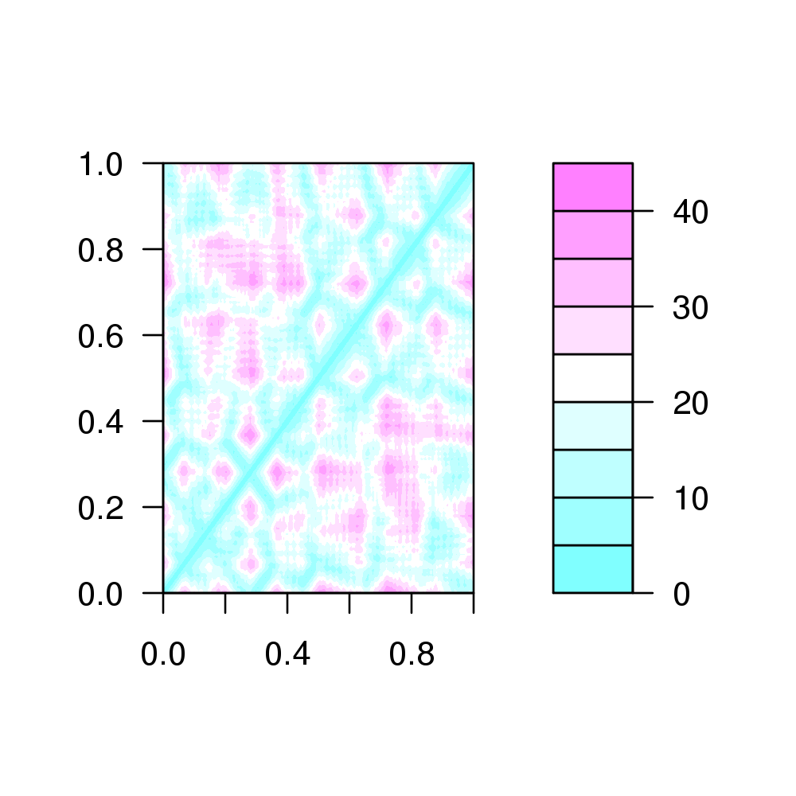
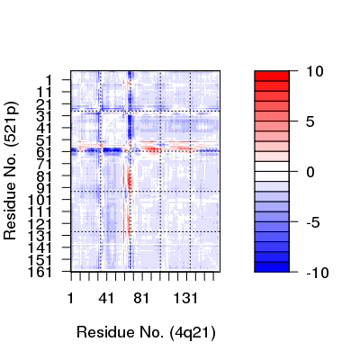

Distance Matrix Analysis
Usage
dm(pdb, selection = "calpha", verbose = TRUE) dm.xyz(xyz, grpby = NULL, scut = NULL, mask.lower = TRUE)
Arguments
- pdb
- a
pdbstructure object as returned byread.pdbor a numeric vector of ‘xyz’ coordinates. - selection
- a character string for selecting the
pdbatoms to undergo comparison (seeatom.select). - verbose
- logical, if TRUE possible warnings are printed.
- xyz
- a numeric vector of Cartesian coordinates.
- grpby
- a vector counting connective duplicated elements that
indicate the elements of
xyzthat should be considered as a group (e.g. atoms from a particular residue). - scut
- a cutoff neighbour value which has the effect of excluding atoms, or groups, that are sequentially within this value.
- mask.lower
- logical, if TRUE the lower matrix elements (i.e. those below the diagonal) are returned as NA.
Description
Construct a distance matrix for a given protein structure.
Details
Distance matrices, also called distance plots or distance maps, are an established means of describing and comparing protein conformations (e.g. Phillips, 1970; Holm, 1993).
A distance matrix is a 2D representation of 3D structure that is independent of the coordinate reference frame and, ignoring chirality, contains enough information to reconstruct the 3D Cartesian coordinates (e.g. Havel, 1983).
Value
Returns a numeric matrix of class "dmat", with all N by N
distances, where N is the number of selected atoms.
References
Grant, B.J. et al. (2006) Bioinformatics 22, 2695--2696.
Phillips (1970) Biochem. Soc. Symp. 31, 11--28.
Holm (1993) J. Mol. Biol. 233, 123--138.
Havel (1983) Bull. Math. Biol. 45, 665--720.
Note
The input selection can be any character string or pattern
interpretable by the function atom.select. For example,
shortcuts "calpha", "back", "all" and selection
strings of the form /segment/chain/residue number/residue
name/element number/element name/; see atom.select
for details.
If a coordinate vector is provided as input (rather than a pdb
object) the selection option is redundant and the input vector
should be pruned instead to include only desired positions.
Examples
##--- Distance Matrix Plot pdb <- read.pdb( "4q21" )Note: Accessing online PDB file HEADER ONCOGENE PROTEIN 25-SEP-91 4Q21k <- dm(pdb,selection="calpha") filled.contour(k, nlevels = 10)
##--- DDM: Difference Distance Matrix # Downlaod and align two PDB files pdbs <- pdbaln( get.pdb( c( "4q21", "521p"), path=tempdir() ))Reading PDB files: /tmp/RtmpeKwoQP/4q21.pdb /tmp/RtmpeKwoQP/521p.pdb HEADER ONCOGENE PROTEIN 25-SEP-91 4Q21 . HEADER ONCOGENE PROTEIN 06-JUN-91 521P . Extracting sequences pdb/seq: 1 name: /tmp/RtmpeKwoQP/4q21.pdb pdb/seq: 2 name: /tmp/RtmpeKwoQP/521p.pdb# Get distance matrix a <- dm(pdbs$xyz[1,])input is raw 'xyz' thus 'selection' ignoredb <- dm(pdbs$xyz[2,])input is raw 'xyz' thus 'selection' ignored# Calculate DDM c <- a - b # Plot DDM plot(c,key=FALSE, grid=FALSE)
plot(c, axis.tick.space=10, resnum.1=pdbs$resno[1,], resnum.2=pdbs$resno[2,], grid.col="black", xlab="Residue No. (4q21)", ylab="Residue No. (521p)")
##-- Residue-wise distance matrix based on the ## minimal distance between all available atoms l <- dm.xyz(pdb$xyz, grpby=pdb$atom[,"resno"], scut=3)